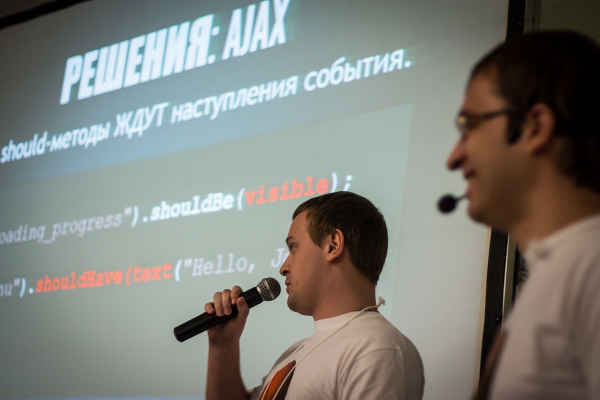

Selenide
Андрей Солнцев

#asolntsev
Программер
Selenide.org
автор
Повестка дня
- Selenide год назад
- Selenium Camp 2013
- Новинки в Selenide от разработчиков
- Новинки от/для тестировщиков
Selenide
=выразительные тесты
на Selenium WebDriver
Selenide
- Выразительные тесты
- Читаемые
- Без мусора
Сосредоточься на бизнес-логике!
Selenium + API = SELENIDE
selenide.org
@Test
public void userCanLogin() {
open("/login");
$("#username").setValue("john");
$(by("type", "submit")).click();
$(".menu").shouldHave(text("Hello, John!"));
}
Проблемы UI-тестов
- Чёртов Ajax
- Ужас поддержки
- Читаемость тестов
Selenide
поможет!
Решения: Ajax
Все should-методы ЖДУТ наступления события.
$(".loading_progress").shouldBe(visible);
$("#menu").shouldHave(text("Hello, John!"));
$(By.name("sex")).shouldNotBe(selected);
Забудь
про AJAX!
SeleniumCamp 2013
Видео | Фото | Storify SeleniumCamp 2013
SeleniumCamp 2013
SeleniumCamp 2013
Честно не понял, почему они сделали Selenide именно так,
но подход имеет право на жизнь.
Проблемы UI-тестеров
- Чёртов Ajax
- Отчёты / Скриншоты
- BDD
- Степы
- Page Objects
- Параллелизация
Как всё
сложно!
План
- Сайт на двух языках - ru.selenide.org
- twitter.com/jselenide
- Опубликловать javadoc - http://selenide.org/javadoc.html
- Гуглогруппы на двух языках - selenide и selenide-ru
Новинки
от разработчиков
FluentWait
Wait().until(
presenceOfAllElementsLocatedBy(
By.tagName("h1")));
new WebDriverWait(driver, 100).until(
presenceOfAllElementsLocatedBy(
By.tagName("h1")));
Actions
actions()
.click($(By.name("rememberMe")))
.build()
.perform();
Actions builder = new Actions(driver);
Action clickMe = builder.click(
$(By.name("rememberMe"))).build();
clickMe.perform();
WebDriver Event Listener
static {
WebDriverRunner.addListener(
new AbstractWebDriverEventListener() {
public void beforeClickOn(WebElement element, WebDriver driver) {
LOG.info("CLICKING: " + element);
sleep(50);
}
});
}
Page Objects
import static
com.codeborne.selenide.Selenide.open;
open("http://github.com/search");
SearchPage searchPage =
open("http://github.com/search",
SearchPage.class);
Page Objects
public class SearchPage {
public void search(String query) {
$("#search_form")
.find(By.name("q"))
.setValue(query)
.pressEnter();
}
}
Page Objects
import static
com.codeborne.selenide.Selenide.page
public class SearchPage {
public UserPage userProfile(String user) {
usersResults()
.find(By.linkText(user))
.click();
return page(UserPage.class);
}
}
Page Objects
Новинки
от/для тестировщиков
Свой WebDriver
WebDriver myDriver = new SomeWebDriver();
myDriver.set... // 100500 настроек
static {
WebDriverRunner.setWebDriver(myDriver);
}
Какие могут быть проблемы?
Свой WebDriver
mvn -Dbrowser=com.my.MyDriverProvider test
class MyDriverProvider
implements WebDriverProvider {
public WebDriver createDriver() {
SomeDriver myDriver = new SomeDriver();
myDriver.set... // 100500 настроек
return driver;
}
}
Параллельные тесты
- WebDriver - нестатический
- Но можно проще!
Параллельные тесты
build.gradle:
test {
systemProperties['browser'] = 'chrome'
systemProperties['webdriver.chrome.driver'] =
'/usr/bin/chromedriver'
maxParallelForks = 3
}
- Запускает 3 процесса
- Это проще и надёжнее!
Поддержка RemoteWebDriver
mvn -Dremote=http://localhost:4444/wd/hub test
- скриншоты (Augmenter)
- зависимости (cglib)
В большинстве случаев RemoteWebDriver не нужен!
Сообщения об ошибках
1. Текст не совпадает
Element should have text 'Hello' {By.id: results}
Element: '<div id=results>Goodbye</div>'
Timeout: 2.500 s.
2. Текст совпадает (а не должен)
Element should not have text 'Bob' {By.className: firstname}
Element: '<td class=firstname>Bob</td>'
Timeout: 4 s.
Сообщения об ошибках
3. Элемент не найден
Element not found {By.selector: #results}
Expected: CSS class 'active'
Timeout: 4 s.
Таймауты
$("#results").shouldHave(cssClass("active"));
- Таймаут по умолчанию 4000 миллисекунд.
- Можно задать -Dselenide.timeout=7000
- Какие могут быть проблемы?
Таймауты
- Кто-то задал в секундах -Dselenide.timeout=7
Element should have text 'Hello' {By.id: results}
Element: '<div id=results>Goodbye</div>'
Timeout: 0.
- Исправил: меньше 1000 нельзя
- Меньше 4000 вообще не имеет смысла
- Какие могут быть проблемы?
Таймауты
- Кто-то задал нулевой: -Dselenide.timeout=0
- Зачем???
- Для какого-то LoadableComponent
- Исправил: можно любой таймаут
- 0 -> "0"
- 150 -> "150 ms"
- 2000 -> "2 s"
- 9500 -> "9.500 s"
Новые функции
- $.scrollTo()
- $.contextClick()
- $.download()
$.download
http://goo.gl/zCoqiQ
File pdf = $("#download_button").download();
Конфликты
$("#download").shouldBe(visible);
$("#download").shouldHave(text("Tere"));
- Какие могут быть проблемы?
- EasyB!
- Всем объектам по shouldHave и shouldBe
$("#download").should(be(visible));
$("#download").should(have(text("Tere")));
Поддержка TestNG
Скриншоты
import
com.codeborne.selenide.testng.ScreenShooter
@Listeners({ ScreenShooter.class})
public class MyTest { ... }
Скриншот после каждого упавшего теста
Поддержка TestNG
Браузер
import
com.codeborne.selenide.testng.BrowserPerTest
@Listeners({ BrowserPerTest})
public class MyTest { ... }
Либо BrowserPerClass
Свои условия
public static Condition css(
String propertyName, String propertyValue) {
return new Condition("css") {
public boolean apply(WebElement element) {
return propertyValue.equals(
element.getCssValue(propertyName));
}
};
}
$("h1").shouldHave(css("font-size", "16px"));
Читабельность!
Стопицот условий
Объявляем:
Condition saved = and(
saveButtonDisabled,
withNoLoadingDialogVisible,
withSuccessMessageDisplayed);
Используем:
Page.shouldBe(saved);
Для сложных UI компонентов
Баги
Скриншоты:
@Rule
public ScreenShooter on = failedTests();
- Какие могут быть проблемы?
- Параметризированные тесты!
- Имя скриншота = имя теста
- Пришлось добавлять циферки
Параметризированные UI-тесты - это неправильно
Статистика
Статистика
Github issues:
- Всего - 101
- Закрыто - 82
Публикации
- RebelLabs, You Might Like Selenide
- Selen ConfeT&QA, Selenide: лаконичные и стабильные UI тесты на Java
- Glen Smith, Selenide за 5 минут
- Журнал Methods&Tools: Selenide - Concise UI Tests in Java
- Selenide HarlemShake
Клиенты

Спасибо!
asolntsev.livejournal.com
andrei.solntsev@gmail.com